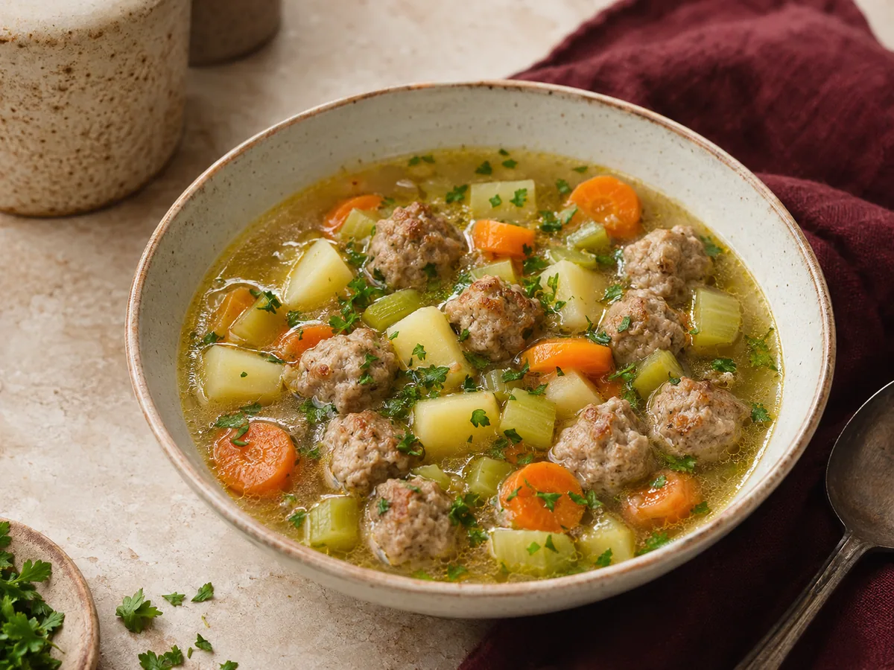

Soup
Meatball and vegetable soup
A light vegetable soup with tender meatballs, potatoes and fresh herbs.
View recipe
Ingredients
- 400 g minced pork or beef
- 1 small onion, finely chopped
- 1 egg and 2 tbsp breadcrumbs
- 2 carrots, 3 potatoes and 2 celery stalks
- 1.5 l stock, parsley, salt and pepper
Method
- Mix the mince with onion, egg, breadcrumbs, salt and pepper, then shape small meatballs.
- Bring the stock to a gentle boil and add the chopped carrots, potatoes and celery.
- After 10 minutes, add the meatballs and simmer for another 20 minutes.
- Check that the meatballs are cooked through, season and finish with parsley.